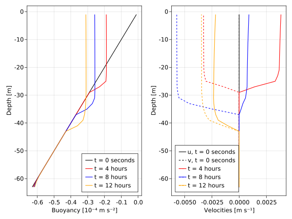

Intro to observations
This example demonstrates the features of OneDimensionalTimeSeries when constructed from "synthetic observations" generated by an Oceananigans Simulation.
Install dependencies
First let's make sure we have all required packages installed.
using Pkg
pkg"add OceanTurbulenceParameterEstimation, Oceananigans, CairoMakie"First we load few things
using OceanTurbulenceParameterEstimation
using Oceananigans
using Oceananigans.Units
using Oceananigans.TurbulenceClosures: ConvectiveAdjustmentVerticalDiffusivity
using CairoMakieGenerating synthetic observations
We define a utility function for constructing synthetic observations,
default_closure = ConvectiveAdjustmentVerticalDiffusivity(; convective_κz = 1.0,
convective_νz = 0.9,
background_κz = 1e-4,
background_νz = 1e-5)
function generate_synthetic_observations(name = "convective_adjustment"; Nz = 32, Lz = 64,
Qᵇ = +1e-8, Qᵘ = -1e-5, f₀ = 1e-4, N² = 1e-6,
Δt = 10.0, stop_time = 12hours,
tracers = :b, closure = default_closure)
data_path = name * ".jld2"
isfile(data_path) && return data_path
grid = RectilinearGrid(size=Nz, z=(-Lz, 0), topology=(Flat, Flat, Bounded))
u_bcs = FieldBoundaryConditions(top = FluxBoundaryCondition(Qᵘ))
b_bcs = FieldBoundaryConditions(top = FluxBoundaryCondition(Qᵇ), bottom = GradientBoundaryCondition(N²))
model = HydrostaticFreeSurfaceModel(; grid, tracers, closure,
buoyancy = BuoyancyTracer(),
boundary_conditions = (; u=u_bcs, b=b_bcs),
coriolis = FPlane(f=f₀))
set!(model, b = (x, y, z) -> N² * z)
simulation = Simulation(model; Δt, stop_time)
init_with_parameters(file, model) = file["parameters"] = (; Qᵇ, Qᵘ, Δt, N², tracers=(:b, :e))
simulation.output_writers[:fields] = JLD2OutputWriter(model, merge(model.velocities, model.tracers),
schedule = TimeInterval(stop_time/3),
prefix = name,
array_type = Array{Float64},
field_slicer = nothing,
init = init_with_parameters,
force = true)
run!(simulation)
return data_path
endgenerate_synthetic_observations (generic function with 2 methods)and invoke it:
data_path = generate_synthetic_observations()"convective_adjustment.jld2"Specifying observations
When synthetic observations are constructed from simulation data, we can select
The fields to include via
field_namesWhich data in the time-series to include via the
timeskeyword. This can be used to change the initial condition for a calibration run.
For example, to build observations with a single field we write,
single_field_observations = OneDimensionalTimeSeries(data_path, field_names=:b, normalize=ZScore)OneDimensionalTimeSeries with fields (:b,)
├── times: [0.0, 14400.0, 28800.0, 43200.0]
├── grid: RectilinearGrid{Float64, Oceananigans.Grids.Flat, Oceananigans.Grids.Flat, Oceananigans.Grids.Bounded}(Nx=1, Ny=1, Nz=32)
├── path: "convective_adjustment.jld2"
├── metadata: (:parameters, :grid, :coriolis, :closure)
└── normalization: Dict{Symbol, ZScore{Float64}}(:b => ZScore{Float64}(-3.537500000000092e-5, 1.4679348395235289e-5))To build observations with two fields we write
two_field_observations = OneDimensionalTimeSeries(data_path, field_names=(:u, :b), normalize=ZScore)OneDimensionalTimeSeries with fields (:u, :b)
├── times: [0.0, 14400.0, 28800.0, 43200.0]
├── grid: RectilinearGrid{Float64, Oceananigans.Grids.Flat, Oceananigans.Grids.Flat, Oceananigans.Grids.Bounded}(Nx=1, Ny=1, Nz=32)
├── path: "convective_adjustment.jld2"
├── metadata: (:parameters, :grid, :coriolis, :closure)
└── normalization: Dict{Symbol, ZScore{Float64}}(:b => ZScore{Float64}(-3.537500000000092e-5, 1.4679348395235289e-5), :u => ZScore{Float64}(0.00012744509148125867, 0.001064100235637857))And to build observations with specified times we write
times = single_field_observations.times[2:end]
specified_times_observations = OneDimensionalTimeSeries(data_path, field_names=(:u, :b), normalize=ZScore, times=times)OneDimensionalTimeSeries with fields (:u, :b)
├── times: [14400.0, 28800.0, 43200.0]
├── grid: RectilinearGrid{Float64, Oceananigans.Grids.Flat, Oceananigans.Grids.Flat, Oceananigans.Grids.Bounded}(Nx=1, Ny=1, Nz=32)
├── path: "convective_adjustment.jld2"
├── metadata: (:parameters, :grid, :coriolis, :closure)
└── normalization: Dict{Symbol, ZScore{Float64}}(:b => ZScore{Float64}(-3.65000000000012e-5, 1.317741852861411e-5), :u => ZScore{Float64}(0.00016992678864167823, 0.001228717114980522))Notice that in the last case, specified_times_observations.times is missing 0.0.
Visualizing observations
For this we include the initial condition and $v$ velocity component,
observations = OneDimensionalTimeSeries(data_path, field_names=(:u, :v, :b), normalize=ZScore)
fig = Figure()
ax_b = Axis(fig[1, 1], xlabel = "Buoyancy [10⁻⁴ m s⁻²]", ylabel = "Depth [m]")
ax_u = Axis(fig[1, 2], xlabel = "Velocities [m s⁻¹]", ylabel = "Depth [m]")
z = znodes(Center, observations.grid)
colorcycle = [:black, :red, :blue, :orange, :pink]
for i = 1:length(observations.times)
b = observations.field_time_serieses.b[i]
u = observations.field_time_serieses.u[i]
v = observations.field_time_serieses.v[i]
t = observations.times[i]
label = "t = " * prettytime(t)
u_label = i == 1 ? "u, " * label : label
v_label = i == 1 ? "v, " * label : label
lines!(ax_b, 1e4 * interior(b)[1, 1, :], z; label, color=colorcycle[i]) # convert units from m s⁻² to 10⁻⁴ m s⁻²
lines!(ax_u, interior(u)[1, 1, :], z; linestyle=:solid, color=colorcycle[i], label=u_label)
lines!(ax_u, interior(v)[1, 1, :], z; linestyle=:dash, color=colorcycle[i], label=v_label)
end
axislegend(ax_b, position=:rb)
axislegend(ax_u, position=:lb, merge=true)
save("intro_to_observations.svg", fig)CairoScreen{Cairo.CairoSurfaceIOStream{UInt32}} with surface:
Cairo.CairoSurfaceIOStream{UInt32}(Ptr{Nothing} @0x000000000e182180, 600.0, 450.0, IOBuffer(data=UInt8[...], readable=true, writable=true, seekable=true, append=false, size=0, maxsize=Inf, ptr=1, mark=-1))

Hint: if using a REPL or notebook, try using Pkg; Pkg.add("ElectronDisplay"); using ElectronDisplay; display(fig) To see the figure in a window.
This page was generated using Literate.jl.